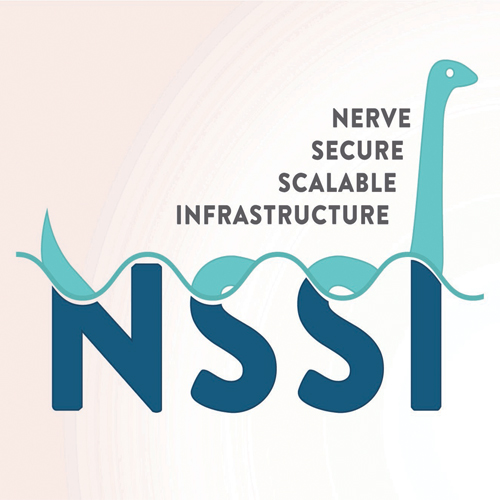
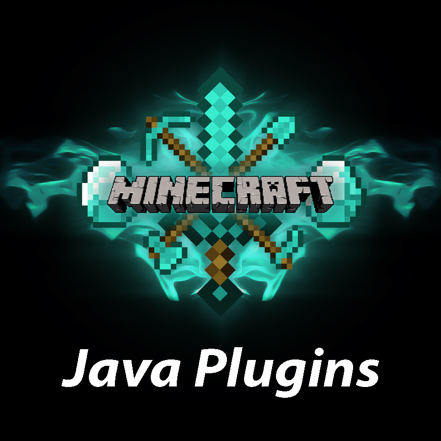
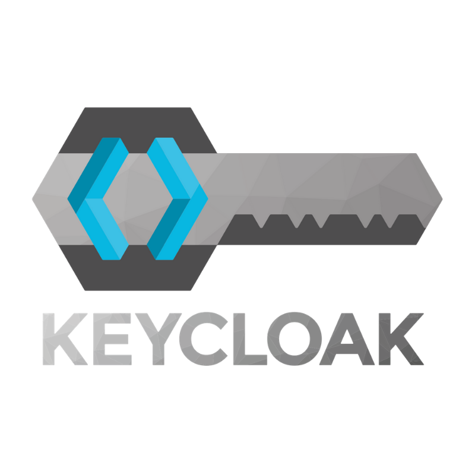
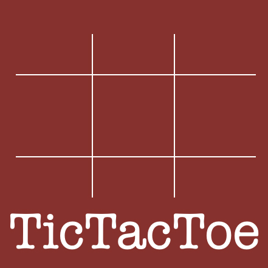
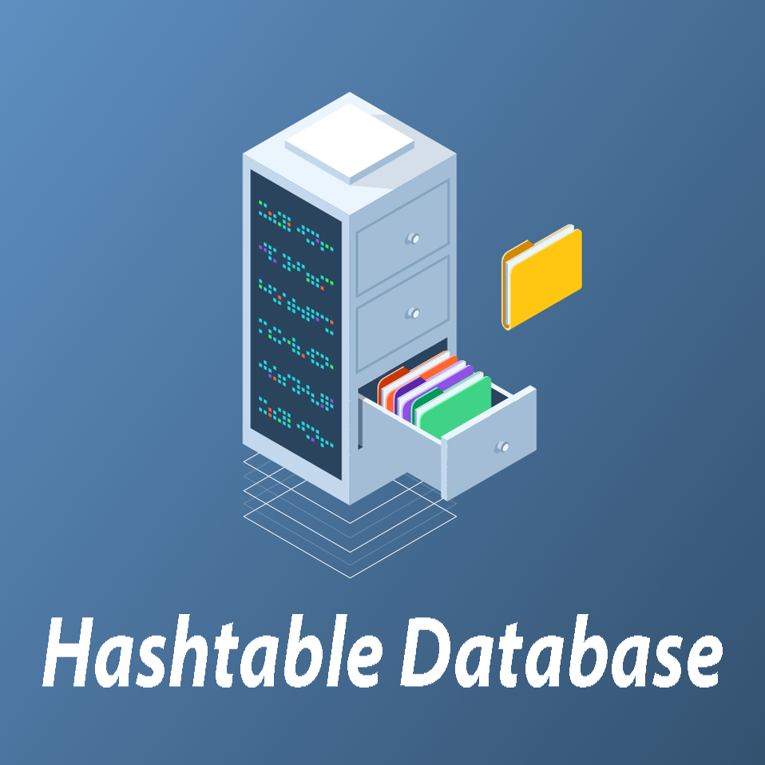
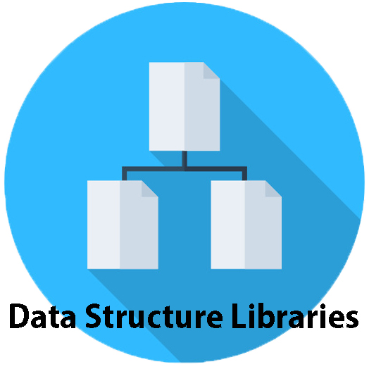

ResearchSpaceResearchSpace is an open-source platform for linked open data visualization, creation, and publication, currently under development by the British Royal Museum in London England. It is a tool that the LINCS project has been working on expanding and modifying to meet its specific requirements. I have been one of the main developers working on this project for LINCS, and in doing so have made contributions to the main project repository hosted by the British Royal Museum. Read More |
|  | NSSIThe NERVE Secure and Scalable Infrastructure (NSSI) is a web api for managing the data conversion workflows used by tools and apps developed by LINCS. NSSI is modularized, and built to be configurable to support multiple data conversion services all accessible from one convenient endpoint. Essentially, NSSI is all about the organization, scalability, and queueing of large data processing tasks. Upon receiving a request, the service is responsible for dispatching the data to the correct service queue, loading the data into the system, and setting up a uri from which the processed data can be accessed from. Read More |
|  | Minecraft PluginAt the start of my second year of university, I started working with a friend of mine on a plugin for one of our favourite games; Minecraft. We decided we would make use of the Java Spigot API to build a plugin for a minigame to be run on a public server. The game is a recreation of an old minigame that I used to play a lot when I was younger. The plugin turned out to be a lot more complex than we orginially thought it would be, but works very well and is currently being hosted on our own public server. Read More |
Mobile MinigameDuring my first year of university, I began a project with a highschool friend of mine in which we designed and built a mobile minigame. I was responsible for the coding and my friend created the graphics. We ended up building a simple 2d side-scroller about guiding a spaceship through a maze; it's called Cosmic Crash. The game includes a realistic physics engine as well as integrated ad slots. Read More |
|  | Keycloak Configuration TUIThe Keycloak Configuration TUI is a script I built for the configuration of the LINCS Keycloak instance. Keycloak is the SSO provider that the LINCS project has chosen to use across all of its tools and services. The point of this script is to provide administrators the ability to easily configure the service across all development environments and all projects that require authentication. Read More |
Website DesignThis website was created out of boredom from being finished exams and realizing that I had nothing to do. I set off to learn something new by starting a project with the intention of challenging myself. In trying to find something to create that was different from other projects I've done, I realized that I had amassed a folder full of finished projects that I wasn't doing anything with. I figured that it was time to publish some of my best works, and this website is the result. Read More |
|  | TicTacToe AIDuring the 2020 Fall semester, I took a course called Data Structures which explored many different ways of storing data within programming languages. For the final project of this course, we were asked to make use of the structures we had discussed in order to create a statistical AI that can play TicTacToe. I really enjoyed the content we learned, and at the end of the semester, I had acheived a 100% average in the course. Read More |
|  | Hashtable DatabaseThis was an assignment for the Fall 2020 Data Structures course. Our task was to use hashtables to create a database of information from the IMDB movie database. These hashtables were then used to create a series of searching functions relating to actors and movies. The programs take input from a specific file format created by my professor and generate hashtable files that match keys and values for faster references. Read More |
|  | Data Structure LibrariesThis is a collection of libraries that I wrote for the Fall 2020 Data Structures course. Each assignment in the course was centered around writing a library of functions for manipulating a specific data structure. During the 5 assignments in the course, we covered pointer/byte/bit manipulation, arrays, linked lists, trees, and hashtables. The test files included were written by my professor, but the functions within the libraries were written by myself. Read More |
The LINCS Browser ExtensionThe LINCS browser extension is a Chromium-based extension designed as an access point for the datasets that LINCS stores. The basic function of the extension is to act as a webpage scanner for information related to the datasets of LINCS' research partners. After opening the extension on a website, the entire content of the site is run through an NER algorithm, the results of which are then queried against the LINCS triplestore. After this, the related information is displayed inline in the website content, with links provided that connect out to other LINCS tools. Read More |
Schema App Highlighter ExtensionSchema App's Highlighter Extension is one of the newest additions to their line of Schema markup creation tools. This project consists of a Chrome extension that allows users to navigate through pages while creating highlighter templates. Highlighter templates are one of the most commonly used services at Schema App. Using XPaths, these templates allow you to create generalized markup for a webpage and then quickly deploy the created markup on potentially millions of similar webpages. The markup itself is generated via the template every time the page loads, so it's always up to date. I worked solely on frontend for this app. Read More |
UUID GeneratorThe UUID generator is a really simple web service developed for the LINCS project. An essential part of linked open data generation is the need to mint new URIs. This webservice is responsible for the creation of these URIs according to LINCS specifications. Considering the amount of universally unique identifiers we need, it made the most sense to create a service that would do it for us and allow us to standardize the lengths and characters used. This service also prevents the rare case of overlapping two different resources with the same URI. Read More |
Linked Open Data VisualizationThe Linked Open Data Visualization (Lod Viz), is another project I worked on for the LINCS project. This is a visualization of linked open data that was originally designed by the Urban Complexity Lab (UCLAB) in Germany. The original version of this tool ran off csv data, instead of lod as it's meant to. My contribution to the project was to create a form to generate true lod, create an admin page for vetting the form data, and then modifying the visualization to run off the generated data. Read More |
 |
Schema AppThrough this interface subscribers of Schema App are able to configure their markup and deployment methods. There are many ways of generating markup, including a manual data creation editor for static pages, a web crawler that can go through sites to apply daily updates to markup, templates that can generate markup on page load, and in some cases the app is even able to pull information directly from third-party applications that the subscriber already uses. For deployment, users can configure integrations with services such as Shopify, Big Commerce, WordPress, and other third-party tools. This is a massive repository built in monolithic Laravel PHP and Vue with Bootstrap components. My contributions include a variety of bug fixes and UX improvements. Read More |
Schema Admin AppThe Schema Admin app is the administrative side of Schema App's main platform. This is the place that Customer Success Managers and Operational Managers are able to access client accounts to configure their markup, set up enterprise contract deals, make administrative changes to a customer's account, and access metrics, customer information and more. This app essentially contains everything that has been decided as needing manual administrative configuration. This is where most of the Customer Insights Engine team does their work. During my time on this project I made a variety of UX improvements and bug fixes, primarily around the customer info reports system and the data editor. Read More |